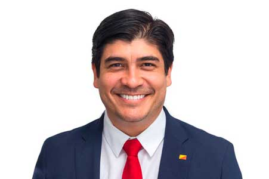

El objetivo principal de esta página es informar a los cuidadanos los diferentes candidatos presidenciales, partidos políticos y planes de gobierno.
Le motivamos a que tome una decisión informado en el momento de ejercer su voto.
Carlos Alvarado Quesada
Partido Acción Ciudadana

Frases
“El futuro está en nuestras manos, ahora debemos tener voluntad y debemos actuar”.
“Fieles a nuestra historia, volvamos a ser excepcionales”.
“Hoy invito a todas las personas de todas las provincias de este país a que trabajemos en unión y nos aboquemos a construir la historia grande que amerita el Bicentenario de esta Patria nuestra”.